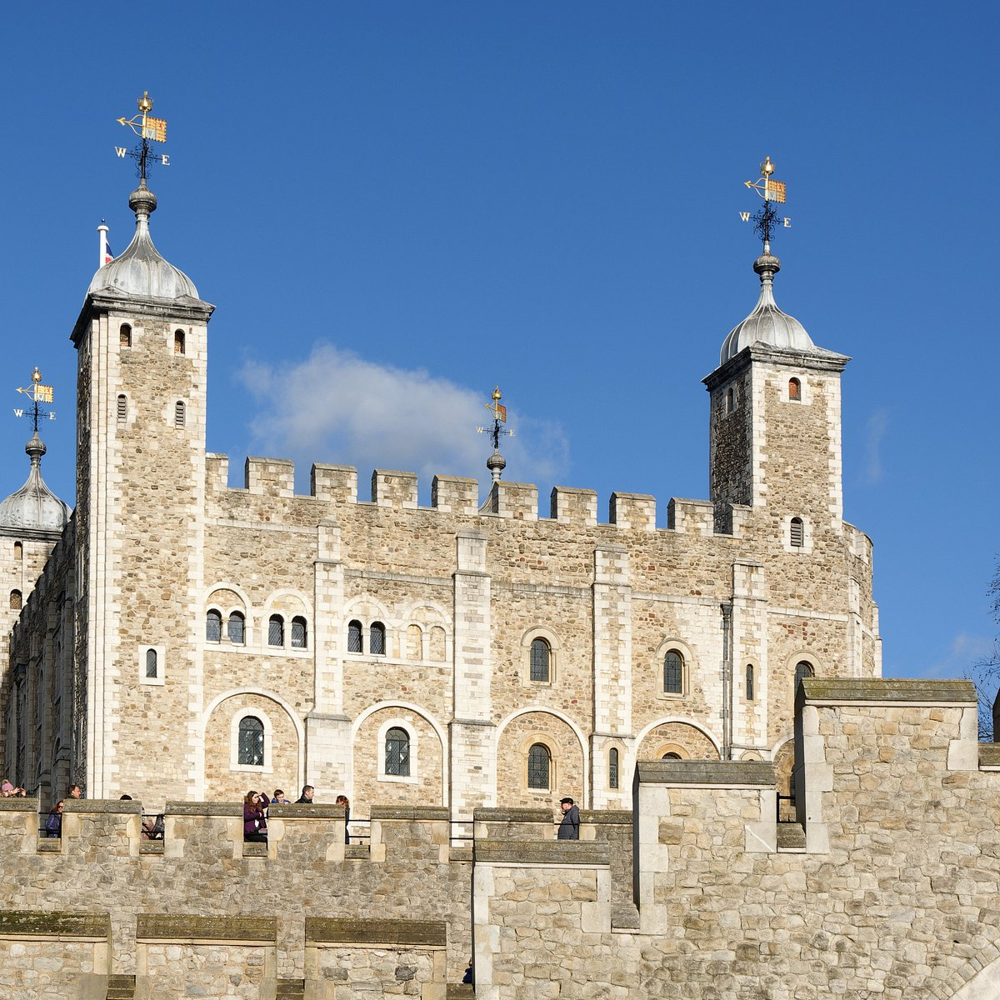
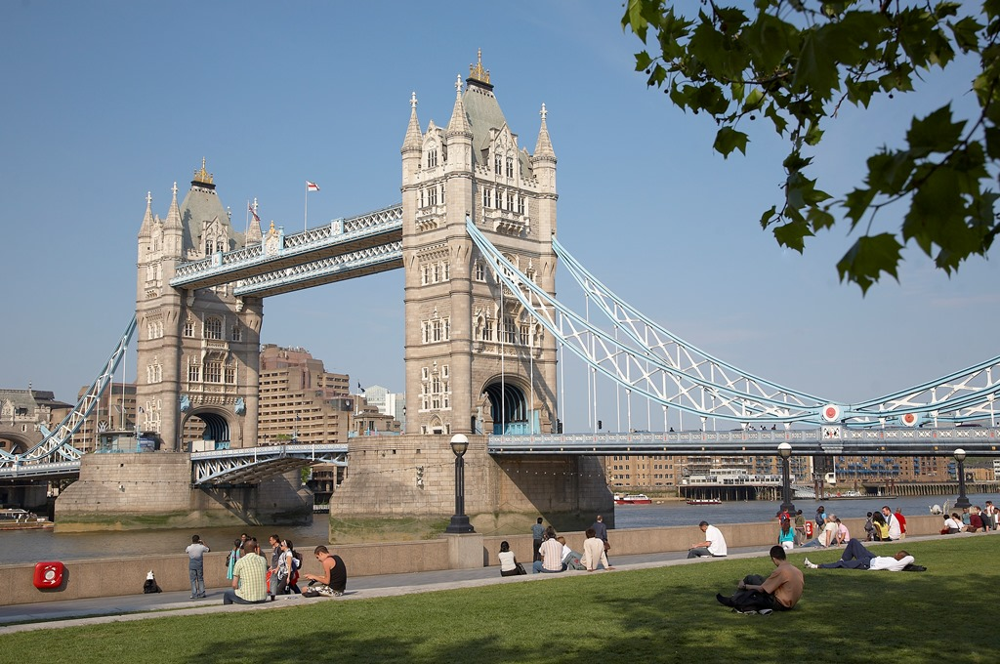
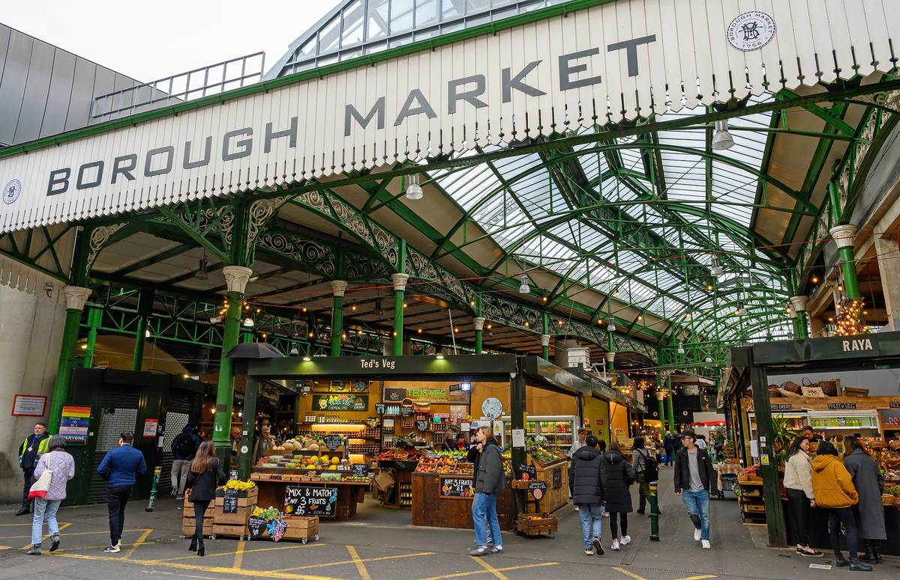
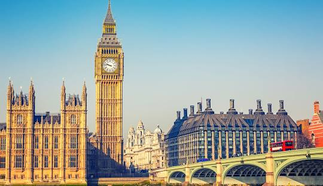
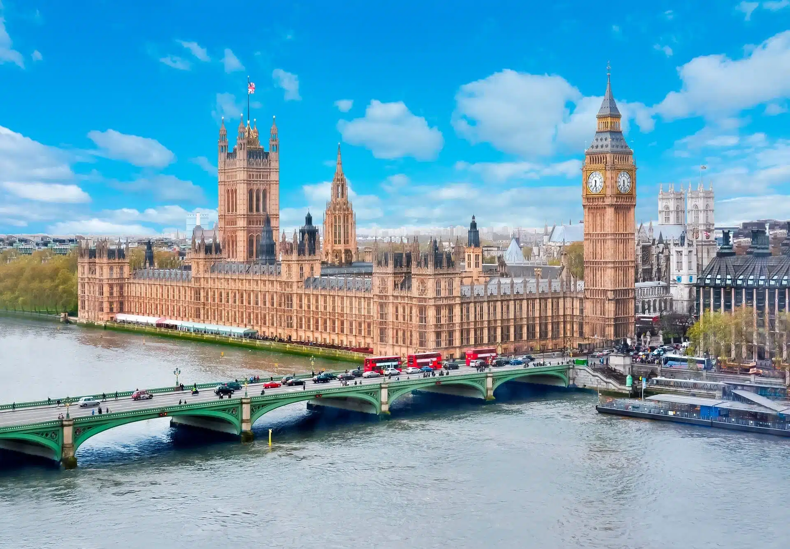
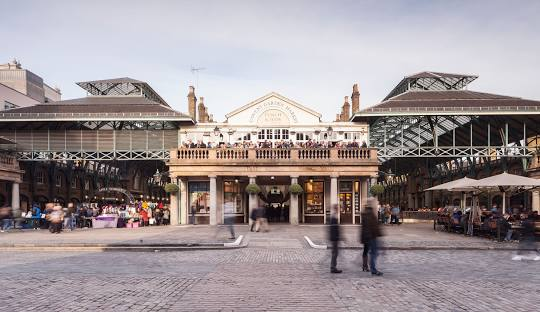

Día 1 Mañana - Londres Histórico

Torre de Londres
Horario: 9:00 AM - 11:00 AM
Explora las Joyas de la Corona y la historia medieval en este castillo icónico.
Ver en Google Maps

Tower Bridge
Horario: 11:15 AM - 12:00 PM
Camina por este puente emblemático y disfruta de las vistas.
Ver en Google MapsDía 1 Tarde - Londres Histórico

Borough Market
Horario: 12:00 PM - 01:00 PM
Almuerzo en Borough Market, un mercado gastronómico famoso con muchas opciones locales e internacionales.
Ver en Google Maps
Abadía de Westminster
Horario: 01:00 PM - 2:30 PM
Visita este lugar histórico de coronaciones y bodas reales.
Ver en Google Maps

Big Ben
Horario: 01:00 PM - 2:30 PM
Visita este lugar histórico de coronaciones y bodas reales.
Ver en Google Maps

Casas del Parlamento
Horario: 01:00 PM - 2:30 PM
Visita este lugar histórico de coronaciones y bodas reales.
Ver en Google Maps

Covent Garden
Horario: 01:00 PM - 2:30 PM
Cena cerca de Covent Garden y explora sus calles animadas y artistas callejeros.
Ver en Google Maps